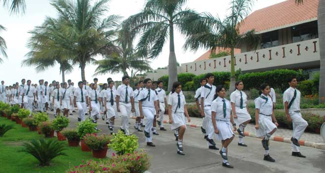

Admission Process
STEP – 1 You can fill & submit the registration form online at www.dpsindore.org or obtain one from parent facilitation centre at DPS Rau, Indore. The payment as well as submission of documents can be done online too. Note: Incomplete forms will not be accepted
STEP – 2 Fill the registration form with all the required information including personal information. Incomplete forms will not be accepted. Completed forms can be submitted to the admission counselor in the school campus. Parents are required to submit the following documents duly self attested along with the registration form
STEP – 3 Once the registration form is processed an e-mail/call will be sent/made to the applicants detailing the time for the interaction based on the eligibility criteria.
STEP – 4 Registered candidates will be called for personal interaction wherein a provisional admission order will be issued with the detailed fee structure.
© Copyright Delhi Public School | Indore